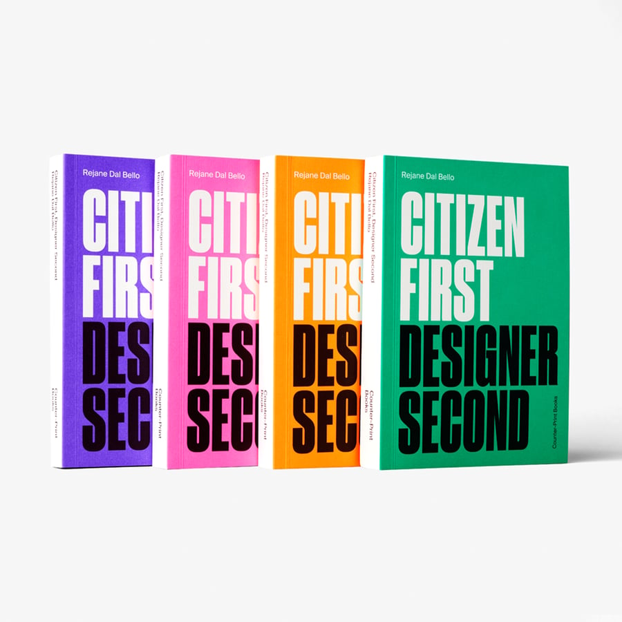

Jen:
The Joy
Luck Club,
Amy Tan
Morgan:
The City in
Which I Love You,
Li-Young Lee
Tiana:
Little Fires Everywhere, Celeste Ng
Justin Durkin
designer
Go to Justin’s pick


More and more, I feel like the American Civil War never really ended. We see that in many ways, not the least of which are fresh attempts at suppressing voting rights. So I turn to books like Ron Chernow’s fascinating biography of Ulysses S. Grant for a sense of how events of 150 years ago continue to shape our society.
Allan Gold
senior adviser
Go to Allan’s pick
Annie Mullowney
senior editor
Go to Annies’s pick

At 2.5, my adorable, sweet, gentle toddler started morphing into a monster. She hits, she bites, she screams (dear Lord, the screaming). It doesn’t matter how many times you’ve heard about the terrible twos (and threes)—when your kid starts going through it, it’s impossible not to feel overwhelmed, alone, and at fault. Not only did I feel like I was failing because my daughter was behaving this way but also because I was certain I wasn’t responding the way I should.
The social media account Big Little Feelings has been hugely helpful—both by legitimizing our experience and by providing practical tips for surviving toddlers and helping them thrive. Rule #1: OK the feeling, keep the boundary of what behavior is not OK. So, for example, “It’s OK to feel mad. It’s upsetting when someone takes something from you. It’s not OK to hit. I’m going to help keep everyone safe by moving you over here.” I love their Instagram content so much I’ve just purchased their course on managing toddlers; I’ll be sure to report back.
The Disney+ original series The Falcon and the Winter Soldier takes a deep look into what it means to be a superhero, especially as a Black American, and the legacy of Captain America and his shield. The series (based on the Marvel Comics series Captain America: Sam Wilson) follows the events of Avengers: Endgame with Sam Wilson (Anthony Mackie) and Bucky Barnes (Sebastian Stan) teaming up...and pushing themselves further than ever before. The action is fast-paced, and the story is surprisingly character-driven, creating room to tackle larger issues, such as the treatment of Black Americans throughout history.
Annie:
Gold Boy,
Emerald Girl,
Yiyun Li

Struggling with an irrational and aggressive toddler? Wondering about the history of race relations in the United States? Looking for your next TV series or book? Read on for this month’s picks from Leff.


Some of our favorite work from Asian and Pacific American authors and poets:
Go to Ugne’s pick
Ugne Jurgaityte
design associate
Having written the book Citizen First Designer Second in one week, Rejane Dal Bello embodies the energetic aptitude and approach to design that most designers can relate to. She concisely, and ever so casually, unravels the truth about design: it is a muscle to flex and a language to master; it is a tool that betters its user, rather than accompanies it.
